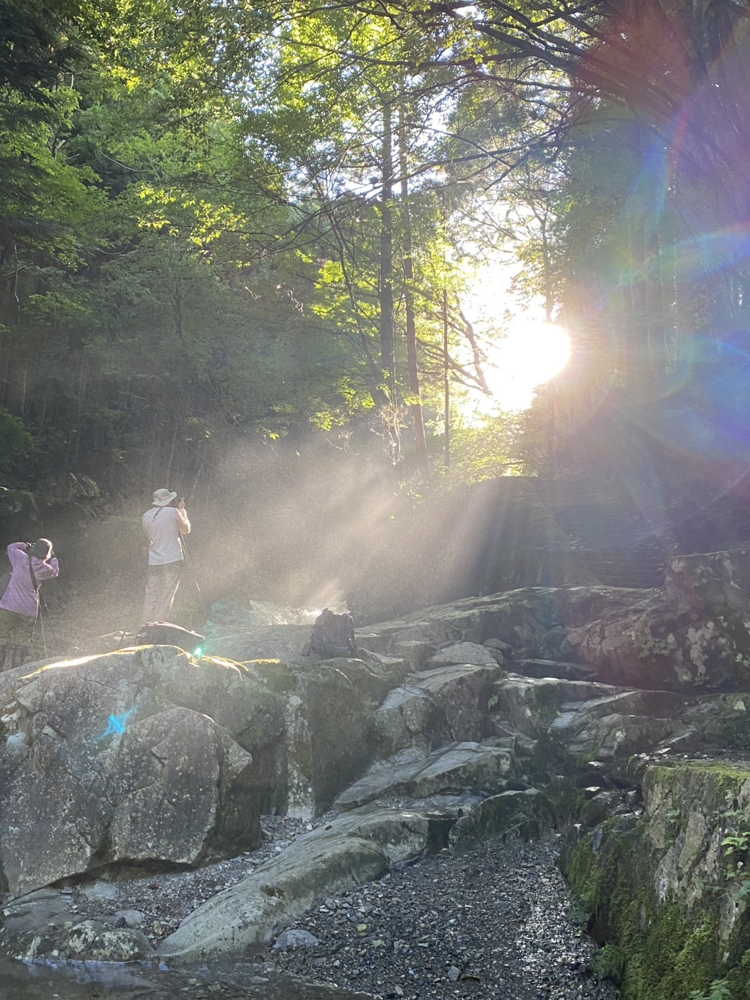
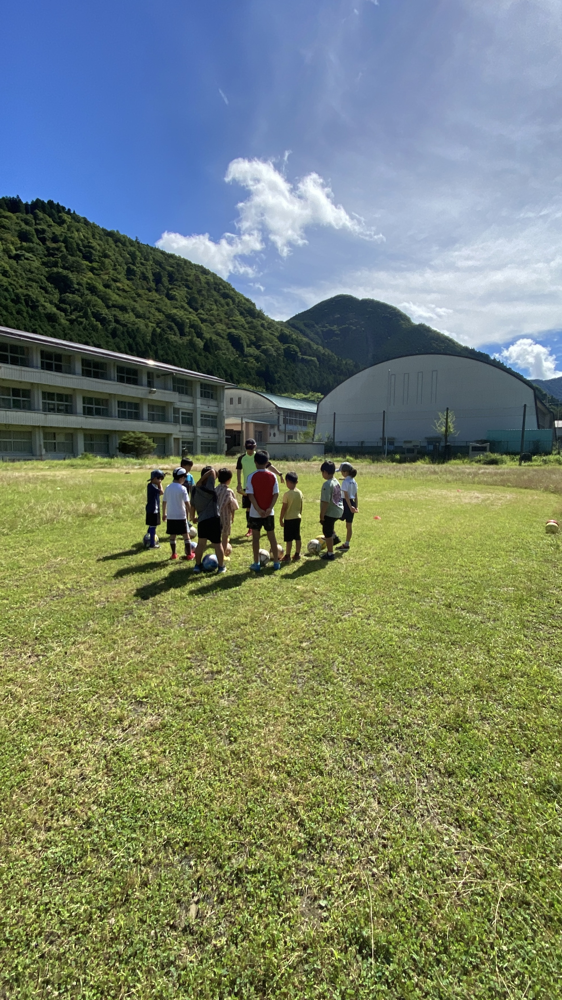
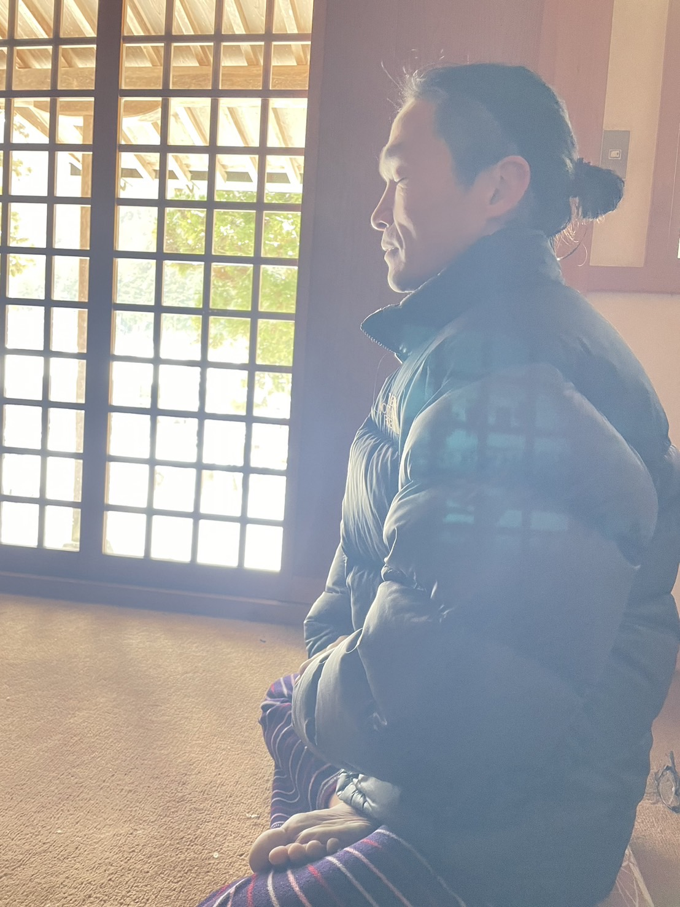

場の価値を内側から受け取れる
参加者としてだけでは見えない、場が立ち上がる瞬間、土地と人がつながる瞬間に立ち会えます。

Message
天川村で生まれる場を、天川村側から一緒に支え、育てていく仲間への呼びかけです。
Way of Life「いのちの巡礼」は、宇宙138億年、地球46億年の物語を、天川村の水、森、岩屋、祈りの場をめぐる歩みに重ねていく2日間の体験です。
この企画は、外から来た人たちが天川村でイベントをするだけのものではなく、天川村にいる人、天川村とご縁のある人が一緒に関わることで、より深く、あたたかく、土地に根ざした場になると感じています。
だからこそ、天川側の仲間として、この巡礼を一緒に支えてくれる人を募集します。
Why
What You Receive
参加者としてだけでは見えない、場が立ち上がる瞬間、土地と人がつながる瞬間に立ち会えます。
この価値を届けたい人、大切な友人や家族に、正式募集前の先行案内としてお知らせできます。
単発のイベントではなく、天川村のご縁や関係人口を未来へつなげていく流れに関われます。
People
Way of Lifeをつくってきた中心メンバーと、企画運営会議の段階から一緒に場を育てていけること。それ自体が、このスタッフ参加の大きな魅力です。
「たった一つの小さなコツ」を通して、人の意識、関係性、生き方の変化を言葉にし続けている人。
Way of Lifeでは、宇宙と地球の大きな時間の中で、世界と人との距離が近づく体験を大切にしています。
野澤さんのWay of Life発信を見るWay of Lifeを共につくっている中心メンバー。宇宙138億年、地球46億年、生命のつながりを、体験として伝える場づくりを担っています。
子どもたちも学びやすいアプリや、科学とロマンをつなぐ表現づくりにも関わっています。
References
この企画がどんな流れから生まれているのか、どんな雰囲気のイベントなのかを、事前に見てもらえるようにしました。
Role
特別なスキルがある人だけを募集しているわけではありません。
大切なのは、天川村を大切に思う気持ちと、この場を一緒に支えたいという感覚です。
集合場所での案内、声かけ、ちょっとした不安の受け止め。
宿泊、温泉、地域の方、場所の使い方など、天川側の感覚を共有する。
歩く道の見守り、子どもや参加者の体調への気づき、休憩の声かけ。
この企画に合いそうな人へ、無理に誘うのではなく、丁寧に案内する。
お母さんたちが子どもを連れて来ても安心できるように、見守りや過ごし方を一緒に整えていく。
当日だけでなく、企画が形になるプロセスに参加し、天川村側の視点やアイデアを持ち寄る。


How We Work
この企画では、それぞれが得意なこと、自然にできることを持ち寄れたらいいと思っています。
時には役割を超えて動く。時には混ざる。けれど、最終的にはそれぞれが呼吸するようにできる場所に戻って、補い合う。
天川側のスタッフも、「全部を背負う」のではなく、自分にできる形で、場を一緒に育てる仲間として関わってもらえたら嬉しいです。
Information
Continuation
このWay of Lifeをきっかけに、天川村を好きになる人、また帰ってきたいと思う人、誰かを連れてきたいと思う人が増えていく。
そんなご縁の流れを、天川側の仲間と一緒に育てていきたいです。
イベントを支えることは、ただ裏方になることではなく、天川村と人のあいだに橋をかけることだと思っています。


From Kaoru
天川村で暮らし、この場所の水、森、人、祈りに触れながら、場が人をひらいていく瞬間を見てきました。
この巡礼を、外から来るイベントとしてではなく、天川村のご縁を未来へつなぐ企画として、一緒に育てていけたら嬉しいです。
参加者向けの先行案内ページを見る